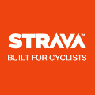
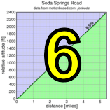

|
 |
|  |
Soda Springs
|
Mount Umunhum presents: the longest continuous climbing road in the Bay area!
RSVP for today's climb after the previous week's climb!
| Groups defining start line order for mass-start: PDF-format |
| results? | right here! |
| profile |  |
| distance | 5.35 miles (8.6 km) |
| climbing | 2368 ft (721 meters) |
| grade | 8.41% |
| where? | see below |
| when? | 10 Nov 2012 |
| what time | registration 9:00 to 10:00 climb starts @ 10:10 |
| RSVP | check back later! |
| waiver | Please fill one out before the climb! |
| how? |  |
| how much? | $10 (free for juniors and those with volunteer credit) |
| why? | why not? |
| coordinator | |
| volunteers | sign up! |
| aerial view | Stanford Cycling (lower) Stanford Cycling (middle) Stanford Cycling (upper) |
| weather | Weather Underground |
| deja-vu? | 1997(5) 1998(3) 2009(4) |
| BikeMap | |
Sorry, folks! Our insurance requires all riders wear helmets during the climb, and we follow the USA Cycling rule against ear buds or other head phones. Rock to tunes before the climb, perhaps, but we need riders to pay attention to what's happening during the climb...
Registration is the usual time (9:00 to 10:00), at the parking lot about a mile north of Soda Springs Road on Alma Bridge Road. A Google Map is here.
To ride there from Los Gatos, you can take the Los Gatos Creek Trail to Alma Bridge Road, then turn left and ride to the parking lot. Driving, take the Alma Bridge exit from Highway 17.
There should be a toilet in the parking area. However, we strongly recommend stopping in Los Gatos on the way there. There's an absolutely excellent coffee roasters in Los Gatos for pre-event caffeine doping, for example.
This is a mass-start climb. However, we will be pre-seeding riders who register by Thursday so you know where in the start you should place yourself. This should maximize safety during the climb, and create the fairest competition.
Soda Springs Road is marked as having only one legal way down, and that's the way you came up. Since the road is narrow and there's a lot of us, descending riders should exercise extreme care in descending. In particular, please pull over and come to a complete stop in the case of any on-coming traffic. The last time we were here, we received comments from a local driver of unsafe conditions, and at Low-Key our philosophy is to be gracious guests to the roads we visit. This is a fantastic climb, and we'd hate to not be able to return.
Volunteers make Low-Key tick! Without them, we no longer function. Please sign up for any week in the series using our volunteer form! Thanks!!!
Low-Key is all about a group of friends riding up a hill together. It's like any other informal group ride, except we time you to the top and report the results on our web site. But we have no road closures, no lead vehicle, no follow vehicle. We are traffic, sharing the roads with other traffic, following the laws and courtesy which applies to traffic. Think of it as a human-assisted Strava. We're each responsible for our own actions out there, on and off the bike, both as users of the road as as courteous visitors to the neighborhoods we pass through. "Ceci n'est pas un race".
{kind=link}
{kind=link}
{kind=link}